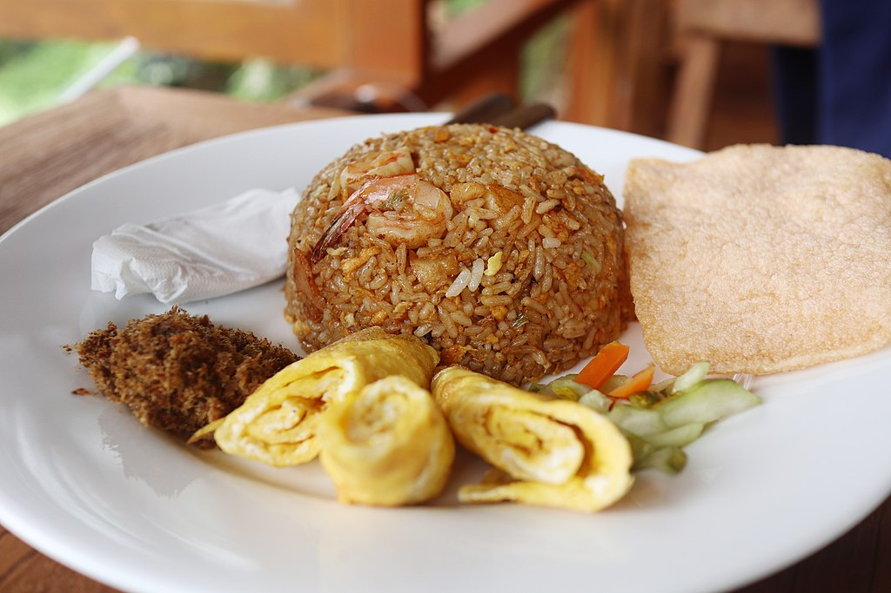

Nasi Goreng

Description
Nasi goreng is a Southeast Asian fried rice dish, usually cooked with pieces of meat and vegetables.
Ingredients
- Rice
- Salt and MSG
- Minced Garlic
- Minced Shallot
- Meat and vegetables
- Other prefered seasoning
Steps
- Heat your Wok
- Put a bit of cooking oil
- If the oil already hot, fry the garlic and shallot
- When it smell good, put the rice, meat and vegetables, and other prefered seasoning
- Put salt and MSG to fix the taste
- Enjoy